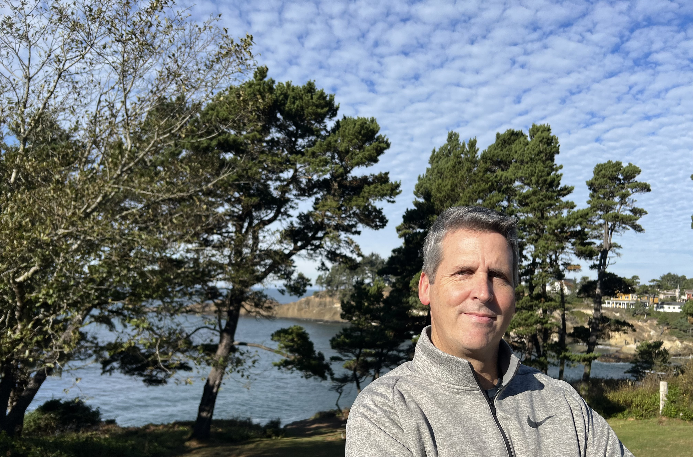

About Me
With over two decades of legal experience, I am a dedicated attorney specializing in plaintiff PPP fraud cases under the federal False Claims Act. My focus is on holding accountable those who fraudulently obtained PPP loans during the COVID-19 pandemic.
Passion for Justice
The Small Business Administration's Office of Inspector General estimates that a staggering $200 billion of the $1.2 trillion in federal aid disbursed to small businesses during the pandemic was obtained through fraudulent means. I am committed to addressing this issue and seeking justice on behalf of the government and the American people.
Extensive Experience
Over the years, I have filed over 50 PPP fraud cases in numerous federal courts across the nation. My work has garnered recognition in various media outlets and government press releases, highlighting my relentless pursuit of justice. One such feature can be found in the Bloomberg Law article titled "Lawyer Sniffs Out Covid Loan Fraud as DOJ Sleuth Suing From Afar" by John Holland, accessible here. Bryan was featured on a January 3, 2024 Nightline episode about PPP fraud. See him here on ABC.
Dedication to Integrity
My legal practice is built on a foundation of integrity, seeking to preserve the integrity of federal aid programs and the legal system. I remain committed to upholding the law and ensuring that those who engage in fraudulent activities are held accountable.
Get in Touch
If you know of PPP fraud and want help filing your case, please feel free to contact me to schedule a consultation. Together, we can work towards a fair and just resolution for your PPP fraud case.
Contact
J. Bryan Quesenberry
jbq.esq@gmail.com
Oregon, Unites States of America